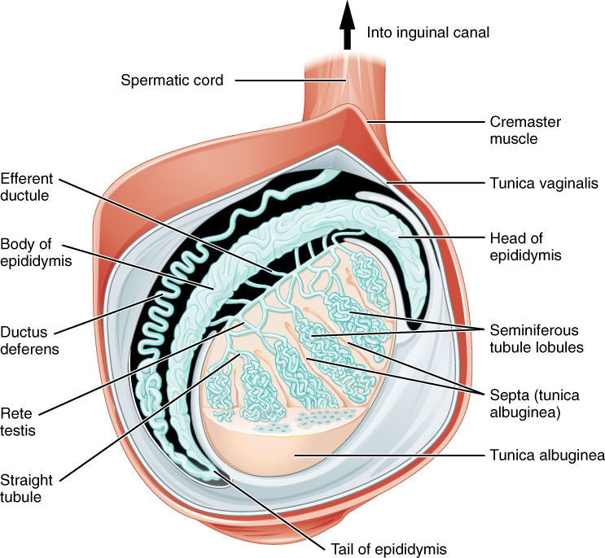

💪 Sức khỏe Nam giới
Sexual Health — Male Fertility & Sperm QualityDeep dive⏱ 8 phút đọc
Bản Đồ Sinh Sản Nam Giới: Nhiệt Độ Bìu, Ô Nhiễm Môi Trường, Vi Chất & Chu Kỳ Sinh Tinh
Nhiều cặp đôi trải qua hàng năm trời chữa trị hiếm muộn mà quên mất một sự thật y khoa cơ bản: Gần 50% các trường hợp vô sinh hiếm muộn xuất phát từ yếu tố nam giới. Tinh hoàn của đàn ông được tạo hóa 'đưa ra ngoài ổ bụng' vì một lý do sinh học tối thượng: Tinh trùng không thể sống sót ở nhiệt độ 37°C của cơ thể. Tìm hiểu bản đồ các yếu tố vô hình đang âm thầm hủy hoại giống nòi từ nhiệt độ, sóng nhiệt laptop đến các hóa chất làm rối loạn nội tiết (EDCs).
Nhiệt độ bìu bắt buộc phải duy trì ở mức 33°C–34.5°C. Thói quen tắm nước nóng, ngâm bồn, ngồi lái xe nhiều giờ liên tục hoặc để laptop lên đùi làm nhiệt độ tinh hoàn tăng vọt, gây chết tế bào mầm hàng loạt. Bảo vệ khả năng sinh sản đòi hỏi giải nhiệt vùng kín, loại bỏ đồ nhựa chứa phthalates/BPA và thanh lọc lối sống trong tối thiểu 3 tháng.
Nghịch Lý Tiến Hóa: Tại Sao Tinh Hoàn Lại Nằm Ngoài Cơ Thể?
Trong giải phẫu học cơ thể người, hầu hết các cơ quan nội tạng quan trọng nhất (tim, gan, thận, phổi, buồng trứng) đều được bảo vệ an toàn bên trong lồng ngực hoặc khoang chậu bằng các khung xương vững chắc. Riêng tinh hoàn nam giới lại bị đưa ra ngoài, treo lơ lửng trong một túi da mỏng gọi là Bìu (Scrotum).
Lý do tiến hóa duy nhất cho sự sắp đặt này là Nhiệt Độ (Thermoregulation):
- Quá trình giảm phân tạo tinh trùng (Spermatogenesis) cực kỳ nhạy cảm với nhiệt độ. Các enzyme sao chép DNA của tế bào mầm chỉ hoạt động tối ưu ở nhiệt độ từ 33.5°C đến 34.5°C—tức là thấp hơn thân nhiệt lõi cơ thể (37°C) từ 2.5°C đến 3.5°C.
- Để giữ nhiệt độ này ổn định: Hai khối cơ Cremaster (Cơ bìu) và Dartos liên tục co giãn tự động: Khi trời lạnh, chúng co lại kéo tinh hoàn sát vào cơ thể để sưởi ấm; khi trời nóng, chúng giãn ra hạ thấp tinh hoàn xuống để tỏa nhiệt.
Nếu nhiệt độ tinh hoàn bị đẩy lên mức 37°C kéo dài: Quá trình sinh tinh bị đình trệ ngay lập tức, các tế bào mầm rơi vào quá trình chết rụng theo chương trình (Apoptosis) và tỷ lệ tinh trùng dị dạng tăng vọt.

📊 Sơ đồ y khoa: Giải phẫu tinh hoàn và ống sinh tinh (OpenStax): Hệ cơ bìu và đám rối tĩnh mạch hình dây leo điều hòa nhiệt độ tinh hoàn luôn thấp hơn thân nhiệt 2°C–4°C để nuôi dưỡng tinh trùng. Nguồn sơ đồ: Wikimedia Commons ↗
4 "Sát Thủ Vô Hình" Đang Hủy Hoại Khả Năng Sinh Sản Nam Giới
Tác Nhân Nguy Hiểm
Cơ Chế Phá Hủy Tinh Trùng
Mức Độ Tổn Thương Thực Tế
Khuyến Nghị Phòng Ngừa
Nhiệt Độ Cục Bộ (Laptop, Bồn Nước Nóng, Yên Xe)
Đặt laptop trực tiếp lên đùi làm nhiệt độ bìu tăng thêm +2.8°C chỉ sau 60 phút (Shefi et al., Fertil Steril).
Giảm 40% độ di động tinh trùng; tăng đứt gãy DNA tinh trùng.
Luôn đặt laptop trên bàn; tránh ngâm bồn tắm nước nóng và xông hơi sauna khi đang chuẩn bị sinh con.
Hóa chất trong đồ nhựa dẻo và hóa mỹ phẩm thẩm thấu qua da, giả lập hormone estrogen và khóa thụ thể Androgen.
Gây teo ống sinh tinh; giảm mật độ tinh trùng và giảm hormone testosterone.
Tránh dùng hộp nhựa quay lò vi sóng; chuyển sang bình nước thủy tinh/inox; dùng mỹ phẩm không chứa hương liệu nhân tạo (Phthalate-free).
Sóng Điện Từ Điện Thoại (RF-EMR)
Thói quen để điện thoại di động trong túi quần phía trước liên tục phát sóng vô tuyến và bức xạ nhiệt.
Nghiên cứu tổng hợp ghi nhận giảm 8% khả năng sống sót của tinh trùng.
Để điện thoại trong túi xách hoặc túi áo ngực; bật chế độ máy bay khi không sử dụng.
Giãn Tĩnh Mạch Thừng Tinh (Varicocele)
Tĩnh mạch tinh hoàn bị ứ máu và giãn to (gặp ở 15% nam giới), làm sụp đổ hệ thống tản nhiệt Pampiniform.
Tinh hoàn bị ngâm trong nhiệt độ cao liên tục; nguyên nhân số 1 gây vô sinh nam thứ phát.
Đi khám chuyên khoa Nam học; phẫu thuật vi phẫu thắt tĩnh mạch giãn (Microscopic Varicocelectomy) giúp phục hồi sinh sản.
Vai Trò Của Giấc Ngủ & Điểm Phục Hồi Lên Chất Lượng Tinh Trùng
Không chỉ có nhiệt độ và hóa chất, nghiên cứu từ Đại học Y Boston (Wise et al., Am J Epidemiol) trên các cặp đôi đang lên kế hoạch thụ thai cho thấy:
- Nam giới ngủ ít hơn 6 tiếng mỗi đêm có xác suất giúp bạn đời thụ thai thành công thấp hơn 42% so với nam giới ngủ đủ 7–8 tiếng.
- Mất ngủ làm suy yếu hệ thống phòng thủ chống oxy hóa trong dịch mào tinh hoàn, khiến các tế bào tinh trùng bị tổn thương màng lipid nghiêm trọng trong quá trình dự trữ.
Giao Thức 4 Bước Bảo Vệ Bản Đồ Sinh Sản Phái Mạnh
Thực Hành "Giải Nhiệt Bìu" Hàng Ngày: Mặc quần đùi cotton mỏng, thoáng khí; khi ngủ nên mặc đồ rộng rãi hoặc ngủ khỏa thân để vùng kín được tản nhiệt tự nhiên suốt đêm.
Loại Bỏ Hoàn Toàn Hộp Xốp & Cốc Nhựa Dùng Một Lần: Nhiệt độ nóng của đồ ăn nước uống làm thôi nhiễm hạt vi nhựa (Microplastics) và chất hóa dẻo BPA vào cơ thể, tấn công trực tiếp vào các tế bào Sertoli nuôi dưỡng tinh trùng.
Thực Hiện Phác Đồ Bổ Sung Chống Oxy Hóa 90 Ngày: Uống 200mg CoQ10, 1.000mg Vitamin C, 400 IU Vitamin E tự nhiên, 30mg Kẽm và 1.000mg L-Carnitine mỗi ngày để bảo vệ tính toàn vẹn của chuỗi DNA tinh trùng.
Xét Nghiệm Tinh Dịch Đồ Định Kỳ 6 Tháng: Nếu sau 6 tháng quan hệ đều đặn (2–3 lần/tuần) không dùng biện pháp bảo vệ mà chưa có thai, cả hai vợ chồng cần đi khám song hành—người chồng làm Tinh dịch đồ và xét nghiệm phân mảnh DNA tinh trùng (Halosperm / TUNEL test).
Tài Liệu Tham Khảo & Nguồn Y Khoa
Sharpe, R. M. (2010).Environmental/lifestyle effects on spermatogenesis. Philosophical Transactions of the Royal Society B, 365(1546), 1697–1712. Tài Liệu Nghiên Cứu Gốc Xác Thực ↗
Jung, A., & Schuppe, H. C. (2007).Influence of genital heat stress on semen quality in humans. Human Reproduction Update, 13(6), 523–542. Tạp chí Human Reproduction (PMID: 17872911) ↗
Shefi, S., Tarapore, P. E., et al. (2007).Wet heat exposure: a potentially reversible cause of low semen quality in infertile men. International Brazilian Journal of Urology. Báo Cáo Nghiên Cứu Gốc (NCBI PubMed: 17386094) ↗
Wise, L. A., et al. (2018).Sleep characteristics and fecundability: a prospective study of male and female pregnancy planners. American Journal of Epidemiology, 187(4), 756–766. Tạp chí Sleep (PMID: 29036480) ↗
📚
Nguồn Tham Khảo Y Khoa & Nghiên Cứu Gốc
Bài viết này được tổng hợp và kiểm chứng từ các nghiên cứu y sinh học, hướng dẫn lâm sàng và tài liệu khoa học thiết bị đeo của Philosophical Transactions of the Royal Society B & Human Reproduction Update.
💪 Men's Health
Sexual Health — Male Fertility & Sperm QualityDeep dive⏱ 8 min read
The Male Fertility Blueprint: Scrotal Thermoregulation, Toxins & The 74-Day Cycle
Couples frequently endure years of emotionally exhausting infertility investigations focusing exclusively on the female partner, overlooking a foundational clinical reality: nearly 50% of conception delays stem from male-factor etiology. Evolution suspended male testicles outside the abdominal cavity for an absolute thermal imperative: spermatogenesis is arrested at core body temperature (37°C). Discover the hidden environmental, thermal, and lifestyle hazards sabotaging male fertility.
Scrotal temperature must be tightly maintained at 33°C–34.5°C. Hot tubs, saunas, prolonged seated commuting, and resting laptops directly on the lap induce thermal shock, arresting spermatogenesis and fragmenting DNA. Safeguarding male fecundity requires scrotal cooling, eliminating xenoestrogen-laden plastics (BPA/phthalates), and a disciplined 90-day antioxidant protocol.
The Evolutionary Paradox: Why Are Testes Located Externally?
In human anatomy, nearly every vital organ (heart, brain, liver, ovaries) is protected within bony skeletal cavities. The male testes are suspended externally in a thin cutaneous pouch: the Scrotum.
The sole evolutionary driver is Thermoregulation:
- Spermatogenesis is acutely thermosensitive. Germ cell meiotic enzymes function optimally between 33.5°C and 34.5°C—2.5°C to 3.5°C below core body temperature (37°C).
- The Cremaster and Dartos muscles contract when cold to warm the testes against the perineum, and relax when warm to facilitate convective heat loss.
Sustained elevation to core temperature (37°C) triggers germ cell apoptosis and spikes sperm DNA fragmentation.
📊 Scientific Figure: Structure of the human testis (OpenStax): Scrotal thermoregulation and seminiferous tubule microenvironment maintain testicular temperatures 2°C–4°C below core body temperature. Diagram source: Wikimedia Commons ↗
4 Invisible Saboteurs of Male Fertility
Hazard
Cellular & Endocrine Mechanism
Clinical Impact on Fertility
Prevention
Direct Scrotal Heat (Laptops, Saunas, Heated Seats)
Laptops on the lap elevate scrotal temperature by +2.8°C within 60 minutes (Shefi et al., Fertil Steril).
Reduces sperm motility by 40%; elevates DNA fragmentation.
Use desks; avoid hot tubs and heated car seats when planning conception.
Never microwave plastics; use stainless steel bottles; choose phthalate-free cosmetics.
Radiofrequency Radiation (Cell Phones in Front Pocket)
Continuous RF-EMR emissions and local thermal dissipation.
Meta-analyses report an 8% drop in viable sperm motility.
Keep phones in jacket pockets or bags; switch to airplane mode when feasible.
Varicocele (Scrotal Varicose Veins)
Dilated pampiniform veins cause venous blood pooling, breaking the countercurrent cooling radiator.
Causes chronic testicular hyperthermia; leading cause of secondary male infertility.
Consult an andrologist; microscopic varicocelectomy restores fertility parameters.
Sleep and Recovery Impact on Sperm Health
Research from Boston University (Wise et al., Am J Epidemiol) demonstrated:
- Men sleeping fewer than 6 hours per night had a 42% lower fecundability rate compared to men sleeping 7–8 hours.
- Sleep deprivation depletes seminal antioxidant enzymes, rendering mature sperm susceptible to lipid peroxidation during epididymal transit.
4-Step Practical Protocol for Protecting Fertility
Practice Daily Scrotal Cooling: Wear loose, breathable cotton boxers; sleep unclothed to facilitate overnight convective cooling.
Eliminate Single-Use Plastic Food Containers: Hot food leaches microplastics and endocrine-disrupting BPA directly into meals, damaging Sertoli nurse cells.
Execute a 90-Day Antioxidant Protocol: Take 200mg CoQ10, 1,000mg Vitamin C, 400 IU Vitamin E, 30mg Zinc, and 1,000mg L-Carnitine daily to shield sperm DNA.
Order Semen Analysis with DNA Fragmentation (DFI): If pregnancy is not achieved after 6 months of unprotected intercourse, get tested for sperm count, motility, morphology, and DNA fragmentation.
Clinical References & Scientific Sources
Sharpe, R. M. (2010).Environmental/lifestyle effects on spermatogenesis. Phil Trans R Soc B, 365(1546), 1697–1712. View on PMC ↗
Jung, A., & Schuppe, H. C. (2007).Influence of genital heat stress on semen quality in humans. Hum Reprod Update, 13(6), 523–542. View on PubMed ↗
Shefi, S., et al. (2007).Wet heat exposure: a potentially reversible cause of low semen quality. Int Braz J Urol. View on PubMed ↗
Wise, L. A., et al. (2018).Sleep characteristics and fecundability. Am J Epidemiol, 187(4), 756–766. View on PubMed ↗
📚
Clinical Reference & Scientific Backing
This article is synthesized from peer-reviewed medical literature, clinical guidelines, and wearable biometric validation studies from Philosophical Transactions of the Royal Society B & Human Reproduction Update.